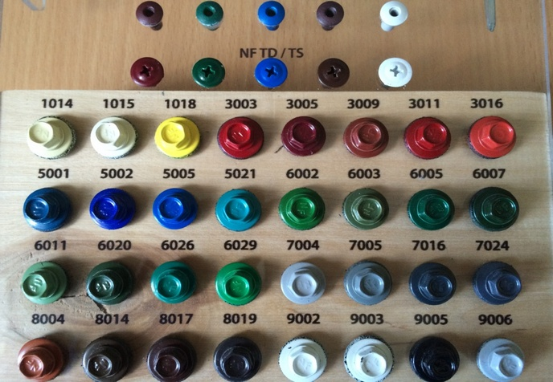

Евроштакетник
Штакетник для забора — это небольшой профилированный лист с двумя парами симметричных ребер жесткости. А загнутые края с шириной кромки 4 мм делают их безопасными и служат дополнительным элементом прочности.
Приобрести евроштакетник в выгодно и просто. Он обладает низкой парусностью, небольшим весом, не требует монтажа мощного и дорогого фундамента под опоры.
Металлический штакетник имеет толщину металла - 0,45 и 0,5 мм в зависимости от выбора покрытия, что в свою очередь сказывается на прочности и долголетии.
Мы предлагаем металлоштакетник трех типов профиля «Европланка», «Трапеция» и «Константа» .
Виды металлоштакетника
Металлический штакетник "ТРАПЕЦИЯ-УСИЛЕННЫЙ"
- Исполнение: одностороннее, двухстороннее покрытие.
- Тип покрытия: глянец, мат, "под дерево", кварц.
- Цена за м.п.: от 1,99 бел. руб.
Металлический штакетник "ЕВРОПЛАНКА"
- Исполнение: одностороннее, двухстороннее покрытие.
- Тип покрытия: глянец, мат, "под дерево", кварц.
- Цена за м.п.: от 1,99 бел. руб.
КОМПЛЕКТУЮЩИЕ ДЛЯ ЗАБОРА ИЗ МЕТАЛЛОШТАКЕТНИКА
- Для поперечных балок - Труба профильная 40x20.
После монтажа балки следует покрыть специальным грунтом, препятствующим появлению ржавчины.
- Для столбов - Труба профильная 60x40, 50х50.
До монтажа столбы следует покрыть специальным грунтом, препятствующим появлению ржавчины.
- Заглушка пластиковая для столбов.
Заглушка препятствует попаданию осадков внутрь столба, предотвращая его разрушение и коррозию.
- Для крепления листов металлопрофиля – Кровельные саморезы или заклепки.
Лист металлопрофиля обычно крепится саморезами или алюминиевыми заклепками. Это распространенный способ. Саморезы и заклепки окрашены в цвет профнастила.
Установка забора из металлического штакетника
Конструкция металлического евроштакетника идентична забору из профнастила. Вместо профнастила используют планки металлоштакетника из расчета 6-7 штук на погонный метр. Необходимо купить не только металлический штакетник для забора в Минске, саморезы и заклепки.
Евроштакетник устанавливается как забор из профнастила. Сначала участок размечают, потом устанавливают столбы из профильной трубы 60х40 с шагом 2,0 – 2,5 м и бетонируется. Перед установкой столбы покрывают антикоррозийным составом. Затем крепятся лаги из трубы 20х40, крепятся или навариваются.
Определяем, как будет зашит забор: с одной стороны или в шахматной порядке. Расстояние между штакетником от 2 до 4 см, а при шахматной укладке – 6-10 см. Начинаем монтаж забора. Секционный способ: на лаги крепятся штакетные планки, и такая секция крепится на столбы. Поштучный способ: устанавливаются столбы, затем крепятся лаги и на них монтируется штакетник. Для крепления используются цветные саморезы или заклепки.
Ворота из металлического штакетника
Последнее время евроштакетник получил широкое применение как элемент заполнения откатных и распашных ворот. Несколько вариантов заполнения створок (вертикальное расположение, горизонтальное расположение). Цвет и частота заполнения по желанию Заказчика.